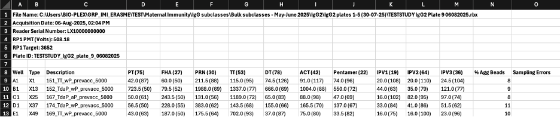

1 Data Uploading
The Interactive Serology Plate Inspector (I-SPI) is designed to streamline quality control and quality assurance for multiplex bead assays starting from raw assay data. Raw bead array data, including assays from Luminex instruments, require careful preparation so that the data can be processed uniformly.
The purpose of this section is to provide guidance to ensure data is loaded correctly and to reveal any inconsistencies in plate labeling and study design.
The Interactive Serology Plate Inspector allows users to import multiple plate files from multiplex immunoassays and uses interactive methods to parse uploaded datasets into tidy data (Wickham 2014) with consistent linkages to independent variables including:
- Categories across groups of subjects
- Timepoint and tissue classification within subjects
- Multiple sample dilutions
1.1 Anatomy of Raw Assay Data
Raw assay data from multiplex bead assays consists of two primary components:
- Plate metadata
- Raw assay MFI measurements and bead count values for antigens by specimen type on the plate
The system accepts Excel files (.xlsx, .xls) exported from Bio-Plex or similar instruments.
Each file contains two sections.
1.1.1 Header Section (Rows 1–7)
- File Name (full path)
- Acquisition Date (
DD-MMM-YYYY, HH:MM AM/PM, see Section 1.3.3 for more details on supported formats)
- Reader Serial Number
- RP1 PMT (Volts)
- RP1 Target
- Plate ID
Additional header information is not currently processed in I-SPI.
1.1.2 Data Section (Row 8+)
| Column | Description |
|---|---|
| Well | Well position (e.g., A1, B2, H12) |
| Type | Specimen type code |
| Description | Delimited string containing sample metadata |
| Antigen columns | MFI values with bead counts in format value (count) |
| % Agg Beads | Percentage of aggregated beads |
| Sampling Errors | Error count during acquisition |
1.1.3 Specimen Type Codes
| Code | Meaning | Description Format |
|---|---|---|
| X | Sample | PatientID_GroupA_GroupB_TimePeriod_DilutionFactor |
| S | Standard | Source DilutionFactor (e.g. NIBSC06140 40) |
| B | Blank | Source_DilutionFactor (e.g. PBS_1) |
| C | Control | Source_DilutionFactor (e.g. Multigam_12500) |

1.2 Batch Upload Workflow
1.2.1 Before Uploading Plate Files
Before uploading batch plate files ensure you have:
- Created or loaded a Project - Navigate to “Create, Add, and Load Projects” in the sidebar
- Created or selected a Study - Type a new study name (up to 15 characters) or select an existing one.
- Selected the sidebar option to Import Plate Data.
- Created or selected an Experiment - Each experiment represents a specific assay run or feature (e.g.,
IgG_total,FcgR2a) - Selected Layout Template as the file format.
1.2.2 Upload Experiment Files
- Click Select all experiment raw data files
- Select all plate files (
.xlsx) for the batch - Enter a Feature name (up to 15 characters) - this identifies the assay type (e.g.,
IgGtot,FcgR2a)
1.2.3 Configure Plate Settings
- Number of Wells
Select the plate format (6, 12, 24, 48, 96, 384, or 1536 wells)
- Description Delimiter
If the Description field contains multiple elements, select the delimiter used:
_underscore (most common)|pipe:colon-hyphen
1.2.3.1 Optional Elements
Check/uncheck to to include subject group assignments:
- SampleGroupA
- SampleGroupB
1.2.3.2 Element Order
Drag and drop elements to match the structure of the Description field structure
Default order: PatientID → TimePeriod → DilutionFactor With groups: PatientID → SampleGroupA → SampleGroupB → TimePeriod → DilutionFactor
1.2.4 Generate Layout Template
- Click “Generate a Layout file”
- Save the Excel file to your computer
- The template contains pre-populated sheets based on your plate data
1.2.5 Review and Edit Layout Template
Open the generated Excel file and verify/edit each sheet:
1.2.5.1 Sheet: plate_id
| Column | Description |
|---|---|
| study_name | Study identifier |
| experiment_name | Experiment identifier |
| number_of_wells | Plate format |
| plate_number | Internal plate identifier |
| plateid | Plate ID from instrument |
| plate_filename | Original file path |
1.2.5.2 Sheet: subject_groups
| Column | Description |
|---|---|
| study_name | Study identifier |
| subject_id | Unique subject identifier |
| groupa | First categorical grouping |
| groupb | Second categorical grouping |
1.2.5.3 Sheet: timepoint
| Column | Description |
|---|---|
| study_name | Study identifier |
| timepoint_tissue_abbreviation | Short timepoint code |
| tissue_type | Example: blood |
| tissue_subtype | Example: serum |
| description | Full timepoint description |
| min_time_since_day_0 | Minimum days from baseline |
| max_time_since_day_0 | Maximum days from baseline |
1.2.5.4 Sheet: antigen_list
| Column | Description |
|---|---|
| antigen_label_on_plate | Column name from plate file |
| antigen_abbreviation | Short antigen name |
| antigen_family | Antigen grouping |
| standard_curve_max_concentration | Upper limit for curve fitting |
1.2.5.5 Sheet: plates_map
| Column | Description |
|---|---|
| study_name | Study identifier |
| plate_number | Plate identifier |
| well | Well position |
| specimen_type | X, S, B, C |
| specimen_source | Source material |
| specimen_dilution_factor | Dilution value |
| subject_id | Subject reference |
| biosample_id_barcode | Sample barcode |
| timepoint_tissue_abbreviation | Timepoint reference |
1.2.6 Upload Completed Layout
- Click “Upload a completed layout file”
- Select your edited layout template
- Review the plate layout visualization
- Configure Blank and Empty Well Handling:
Skip Empty Wells- removes blank entriesUse as Blank- treats as background controls
1.2.7 Validate and Upload
- Check the Batch Validated badge appears (green checkmark)
- If validation fails, review error messages and correct issues
- Click “Upload Batch” to store data in database
- Verify Batch Uploaded badge appears
1.3 Validation and Error Handling
I-SPI performs the following validation before allowing upload:
1.3.1 Metadata Validation
- All uploaded files listed in the
plate_idsheet - File paths are valid
- RP1 PMT values are numeric
- RP1 Target values are numeric
- Acquisition date matches format
DD-MMM-YYYY, HH:MM AM/PM
1.3.2 Bead Array Data Validation
- All antigens in layout exist in plate data
% Agg Beadscolumn present- Bead counts in the format:
value (count) - Blank descriptions follow the format:
Source_Dilution
1.3.3 Date Normalization
I-SPI normalizes the Aquisition Date during data upload. It handles the following formats:
- US formats: M/D/YYYY H:MM AM/PM
- European formats: DD/MM/YYYY HH:MM, DD.MM.YYYY HH:MM
- ISO: YYYY-MM-DD HH:MM:SS
In addition, I-SPI supports non-English month abbreviations including:
- Dutch (okt, mrt, mei)
- German (Mär, Mai, Dez)
- French (fév, avr, aoû)
- Spanish (ene, abr, dic)
- Italian (gen, mag, giu, lug)
- Portuguese (fev, out)
Valid years currently include the years 1990–2100.
1.3.4 Common Validation Errors
| Error | Cause | Solution |
|---|---|---|
| ANTIGEN MISMATCH | Layout antigens do not match plate columns | Verify antigen names exactly match column headers |
| LAYOUT MISMATCH | Uploaded files not listed in plate_id |
Add missing files to plate_id sheet |
| INVALID ACQUISITION DATE | Incorrect date format | Use Format: 01-Oct-2025, 12:12 PM |
| BEAD COUNT FORMAT ERROR | Missing bead counts | Ensure format: value (count) |